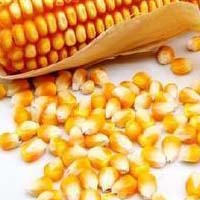

|
|
-

-
玉米种子
-
投入品编号
acsm345000
-
投入品名称
常温
-
投入品类型
玉米种子一号
-
投入品规格
100kg
-
存储类型
冷库
-
保质期
12个月
-
适用标准
无公害
-
亩用种量
3000粒
-
亩产
100kg
-
种子处理
处理
-
种子类型
玉米种子
-
品种特性
|
种植环境： |
大棚种植 |
|
熟性： |
大棚种植 |
| 适合区域： |
土地划分 |
茬口： |
土地划分 |
| 抗性： |
蔬菜播种前要对种子进行处理,种子处理包括清选、消毒,冷、热锻炼、微量元素处理及浸种催芽等。这里介绍几项技术性较强的措施。
1.种子消毒 大多数真菌病害一些细菌病害是由蔬菜种子带菌传播的,如瓜类霜霉病、炭疽病,细菌性角斑病、番茄叶霉病、早疫病. |
| 外观特性： |
种子在我国作为商品销售并逐渐形成市场是在改革开放后，至今仅有20年的历史，商品种子的营销更是新生事物。
要想做好商品种子生产与营销，不仅要掌握其商品的一般共性，而且要研究掌握其商品的特殊性。 |
| 营养口感： |
种子结构分为胚和胚乳两部分，本身储存大量供植物早期发育的营养物质，营养价值很高，所以从远古时我们的祖先就知道了吃粮食（也就是种子）比吃树叶要经济。
活的种子可以进行呼吸作用，消耗营养，所以陈年粮食口感不好；不能进行光合作用，等种子萌发并且变成绿色之后才开始进行光合作用，自己制造营养。
种子在萌发之前先吸水，把浓缩的营养溶解，并分解成可以供种子直接吸收利用的物质，种子就发芽破土而出长成小苗了。 |
| 注意事项： |
针对粘虫繁殖速度快、短期内暴发成灾，3龄后食量暴增、抗药性增强等特性，粘虫防治应采取“控制成虫发生，减少产卵量，抓住龄暴食危害前关键防治时期，
集中连片普治重发生区，隔离防治局部高密度区，控制重发生田害虫转移为害。密切监视一般发生区，对超过防治指标的点片及时挑治”的策略。 |
厂家信息
| 生产厂家： |
济宁种子蔬菜有限公司 |
| 网址： |
www.zhongzishucai.com |
| 联系人： |
张三 |
| 联系方式： |
1594585857 |
| 地址： |
山东省济宁市嘉祥县梁宝寺镇高家庄村（s338线路南） |
|